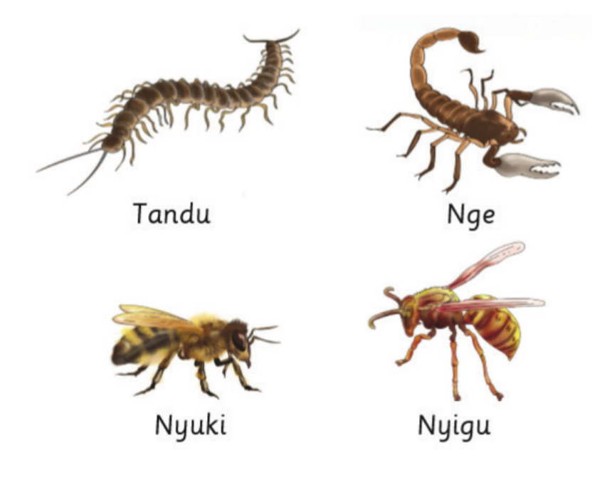

Sura ya Kumi
Huduma ya kwanza
Ulipokuwa Mwaka wa Kwanza, ulijifunza kuhusu sanduku la huduma ya kwanza. Pia, ulijifunza kuhusu kanuni za kutoa huduma ya kwanza na kumhudumia mtu aliyepata jeraha la mchubuko. Katika sura hii, utajifunza kumhudumia mtu aliyeumwa na mdudu mwenye sumu kali. Pia, utajifunza namna ya kutoa huduma ya kwanza kwa mtu aliyezirai. Umahiri utakaoupata katika sura hii, utakuwezesha kutoa huduma ya kwanza kwa mtu aliyeumwa na mdudu mwenye sumu kali na kwa aliyezirai.
Huduma ya kwanza ni msaada unaotolewa kwa mtu aliyeumia au kuugua ghafla. Huduma hii hutolewa kabla ya kupelekwa hospitalini. Kielelezo namba 1 kinaonesha baadhi ya wadudu hatari ambao huweza kumdhuru mtu.

TanduNgeNyukiNyigu
Kielelezo namba 1: Wadudu hatari